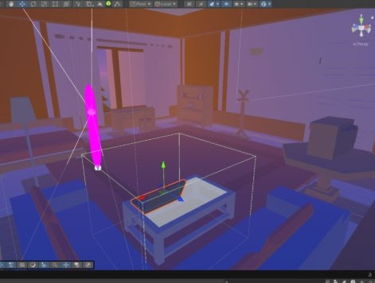
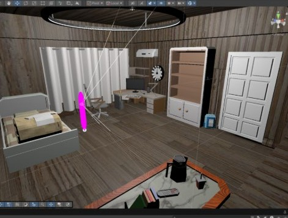
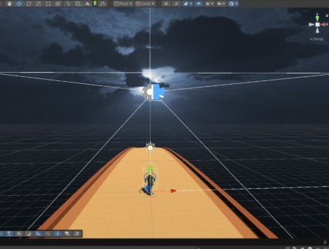
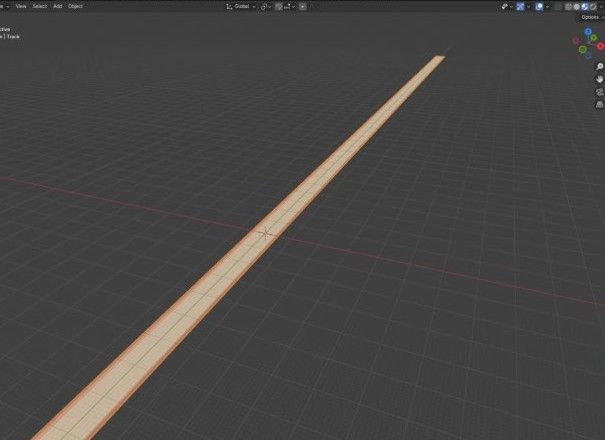

Environmental storytelling · Solo · Unity, Blender
Echoes of Home
A low-poly memory room built from the homes I've actually lived in. No dialogue carries the weight here. The lighting, the objects, and one small symbolic act do.
Solo project, Unity and Blender. I designed, built, and modelled every scene myself, including the runner track.

The room as a memory space
The room comes first because it's where the memories actually live.
I'm asking the player to notice objects, not plot: the posters, the furniture, the way lamp light falls across the rug. None of it is explained. Movement runs on a Character Controller, a raycast detects what's interactable, and trigger zones fire events without a special case for every prop. The lighting is baked, adjusted until it read as a specific time of day rather than a generic interior.

It's short by design. The pacing is the point.
Experience flow
The phone is a literal gateway between the room and the runner, a deliberate contrast between stillness and speed. This is the actual order a player moves through, not a list rearranged for effect.
The player explores freely, looking for the phone.
Touching the phone is the gateway to the runner.
A slide gives the player a breath before the next beat.
Collect coins, avoid obstacles, on a custom-modelled track.
A quieter space: one symbolic task, putting a laptop back where it belongs.
Closes the arc and returns the player to the main room.
The runner sequence

The runner is a deliberate contrast: fast where the room is slow, energy against stillness. Obstacles spawn procedurally with weighted probability so the track never repeats, and a coin manager tracks progress toward a twenty-coin milestone across a few lanes. I modelled the track myself in Blender rather than using a stock asset, which let me set its length and the spacing between obstacles directly against the pacing I wanted, not the other way around.

Implementation, testing, and limitations
A single manager runs menus and story slides; a separate audio manager handles ambient loops and scene-based fading. Testing was informal, three short sessions, think-aloud, moving from the intro through to the alternate room.
The complete sequence, recorded from Unity during development, room through to ending.
The problem
The room-to-runner handoff broke repeatedly. Scene transitions run asynchronously, and Unity was briefly running two audio listeners at once during the switch.
The decision
A short delay lets audio fade out before the next layer fades in. I only found the real cause after a teammate looked at it with fresh eyes.
What testing found
Players missed the phone hotspot at first, story prompts were sometimes unclear, and more than one tester said the fonts looked generic against the tone I wanted.
What's still limited
No touch support, the ending needs more polish, and the main room doesn't visibly change when the player returns. That last one is mechanical, not just emotional, and it's the first thing I'd fix.
What I'd still change
This project taught me more about patience than any single technical lesson did. Balancing emotion against gameplay pacing took longer than I expected, and the more personal the underlying story became, the more pressure I felt to represent it properly. I'd add more memory objects, support touch controls, and give the room some real trace of what the player just did. I came out of it more confident with Unity, and with shaping something interactive around a personal story rather than a mechanical one.